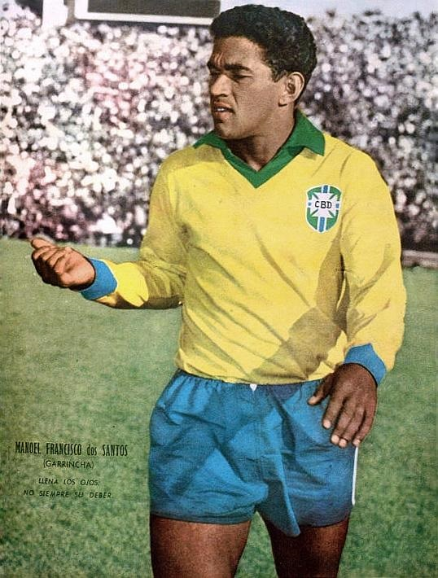

1. Пеле
.jpg)
Эдсон Арантис ду Насименту, более известный как Пеле, считается одним из величайших футболистов всех времен. Он помог Бразилии выиграть Кубок мира трижды — в 1958, 1962 и 1970 годах.
2. Гарринча
Мануэл Франсиску душ Сантуш, известный как Гарринча, играл на позиции правого вингера. Он был ключевым игроком в сборной Бразилии, выигравшей Кубок мира в 1958 и 1962 годах.
3. Зико
Артур Антунеш Коимбра, известный как Зико, был атакующим полузащитником и считается одним из лучших исполнителей штрафных ударов в истории футбола.
4. Ромарио
.jpg)
Ромарио де Соуза Фария, известный как Ромарио, был нападающим и одним из ключевых игроков в победе Бразилии на Кубке мира 1994 года.
5. Роналдо
Роналдо Луис Назарио де Лима, известный как Роналдо, был одним из самых выдающихся нападающих своего времени. Он помог Бразилии выиграть Кубок мира в 2002 году и был лучшим бомбардиром турнира.
6. Кафу
_(cropped).jpg)
Маркус Эванжелиста де Мораес, известный как Кафу, был капитаном сборной Бразилии на Кубке мира 2002 года и является единственным игроком, который участвовал в трех финалах чемпионата мира подряд.
7. Ривалдо

Ривалдо Витор Борба Феррейра, известный как Ривалдо, был атакующим полузащитником и ключевым игроком в победе Бразилии на Кубке мира 2002 года.
8. Роналдиньо
Роналду де Ассис Морейра, известный как Роналдиньо, был одним из самых креативных и талантливых игроков своего времени и помог Бразилии выиграть Кубок мира в 2002 году.
9. Неймар

Неймар да Силва Сантус Жуниор, известный как Неймар, является одним из лучших современных футболистов и ключевым игроком сборной Бразилии.
10. Кака

Рикардо Изексон дос Сантос Лейте, известный как Кака, был выдающимся атакующим полузащитником и обладателем "Золотого мяча" в 2007 году.